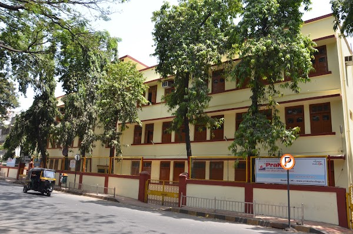
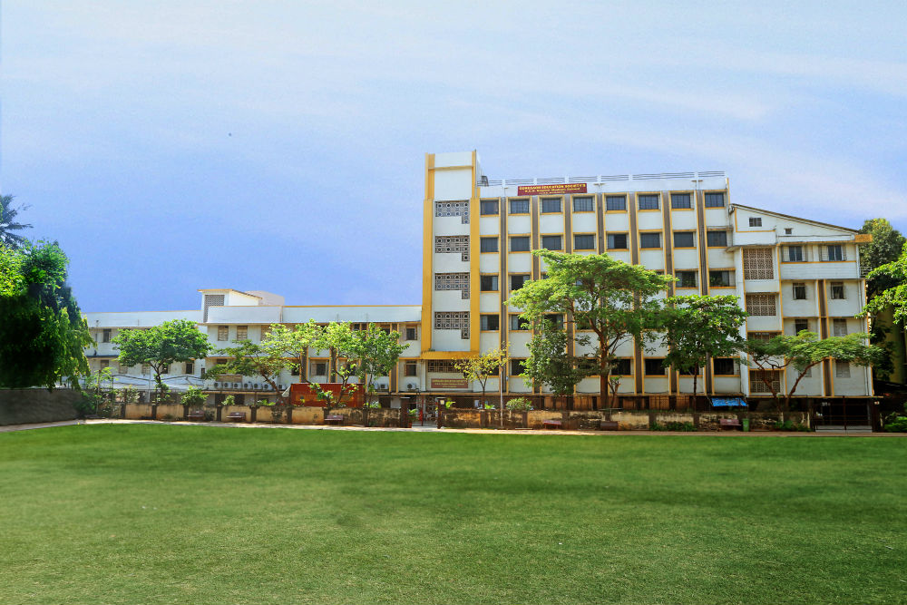

My CV
~ Education
Veermata Jijabai Technological Institute (2023-2027)
.jpeg)
- Currently in First Year, Second Semester
- Pursuing Btech degree in field Computer Engineering from vjti
- Completed of various courses organized by COC successfullty
- Learning various courses related to web development, c++, Data structure,etc.
- Event Coordinator of the Sports Comittee Enthusia
- Team member of Table-Tennis of VJTI and participated in various inter-college event
Prakash College of Commerce and Science (2021-2023)
- Completed Higher Education from Prakash College in Science
- Completed HSC in state board with 84.17%
- Completd MHT-CET in PCM with 99.975 percentile
- Accquiring State level Rank of 44 in MHT-CET and Mumbai City rank 22
Goregaon Education Society (2011-2021)
- Completd School in ICSE board by securing overall percentage of 95.5%
- School topper in Maths, science , and hindi
- Secured A+ in all Subjects
- Team member of Table-Tennis of GES school and won in inter school event
~ Skills
C++
Understanding of fundamental concepts like variables, data types, and control structures. Proficiency in functions, classes, and object-oriented programming principles, along with memory management awareness, is essential for effective C++ programming
CSS
Make websites that are responsive and appealing, whatever size of device they are being viewed on. Learning advanced CSS tests the skills of a developer, enabling them to structure web pages quickly and more efficiently, and to get the job done by using less code.
HTML
Understanding of document structure, essential elements like links, images, and forms, grasp semantic HTML for meaningful content, and be familiar with validation. Additionally, knowledge of basic CSS integration and awareness of document metadata and commenting practices contribute to effective HTML proficiency.
~ Extra-Curricular
- Learning various courses related to web development, c++, Data structure,etc.
- Event Coordinator of the Sports Comittee Enthusia
- Worked with a community to clean the Versova Beach
- Participated in Capture the flag event organized by digital VJTI
- Participated in yoga workshop
- Participated in drawing competition organizedby kalabharti
- Team member of Table-Tennis of VJTI and participated in various inter-college event
- Team member of Table-Tennis of GES school and won in inter school event
~ Hobbies
- Coding: Coding for me is an exhilarating hobby. It’s like weaving spells with logic and syntax.
- Traveling: New places, diverse cultures, and meeting people—it’s like adding chapters to my life story.
- Photography: Capturing moments through the lens is my passion.
- Trekking: The fresh air, scenic views, and the rhythm of my footsteps—it’s invigorating and relaxing.
- Drawing: Expressing my creativity on canvas or paper is both relaxing and exciting.
- Collecting: Whether it’s stamps, coins, or vintage toys, I love curating little treasures.
- Reading: I love diving into fiction novels, exploring non-fiction topics.